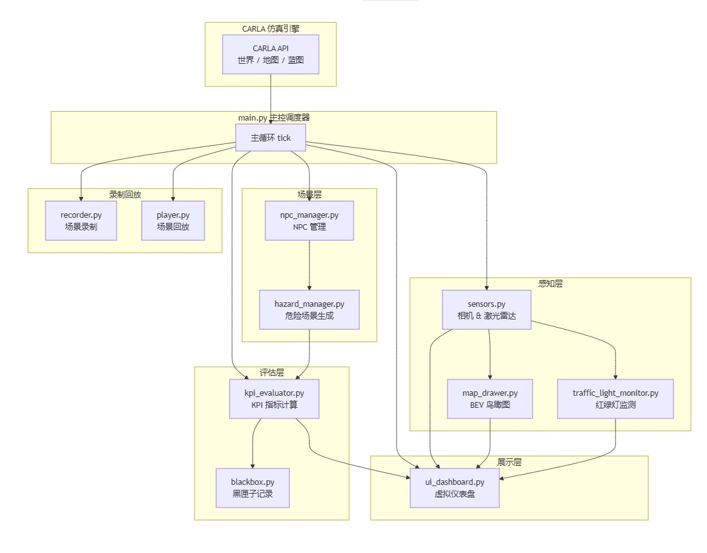
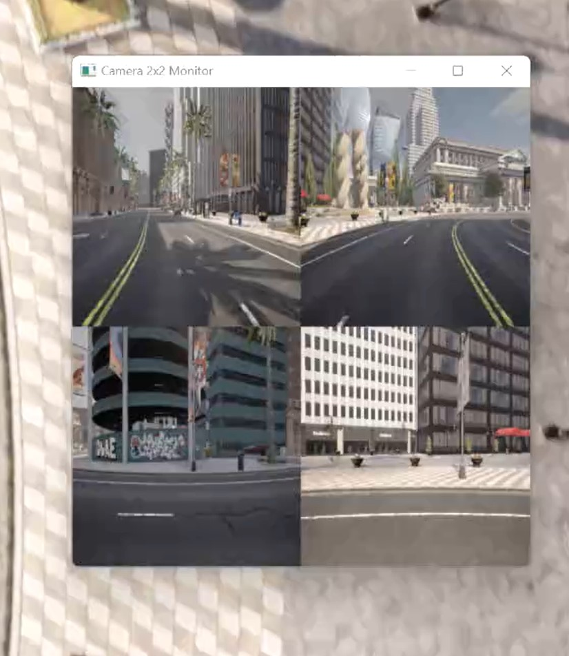
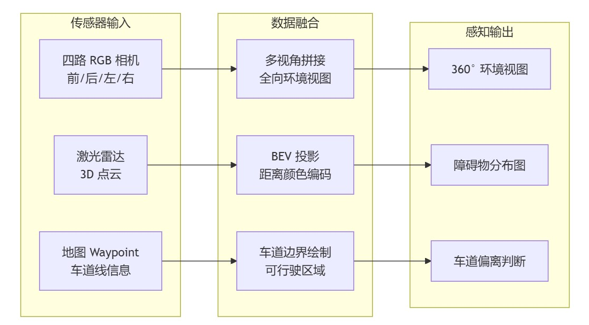
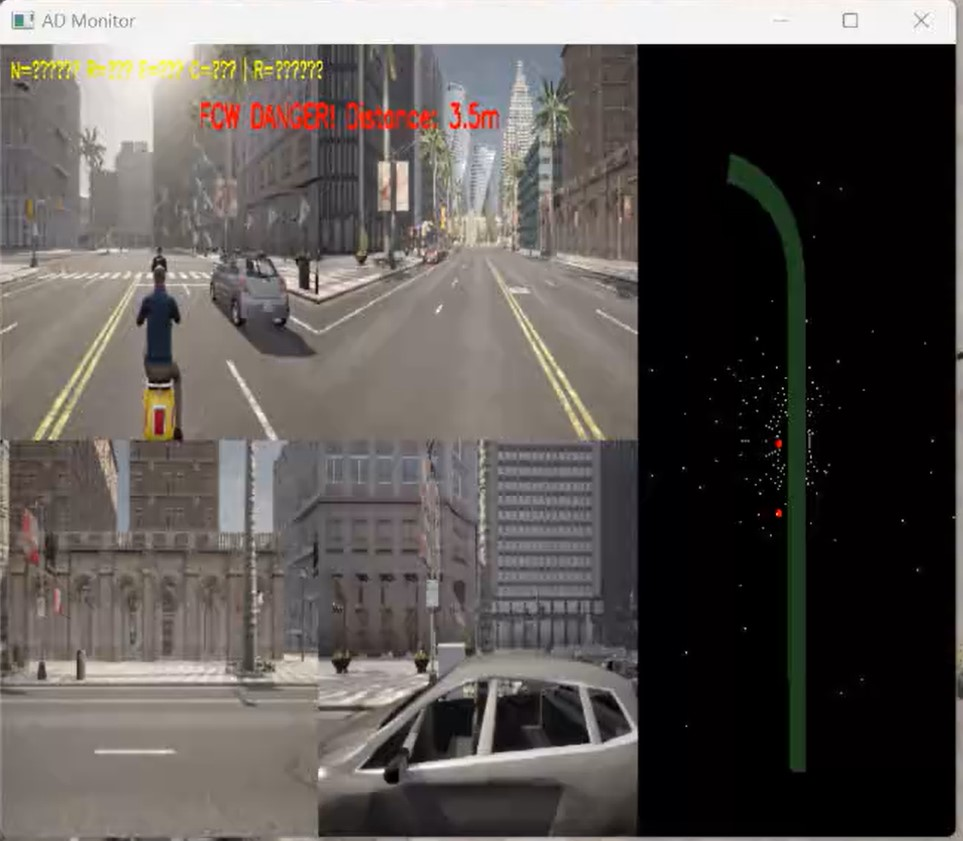
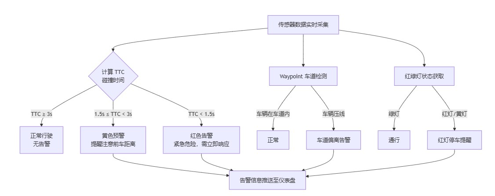
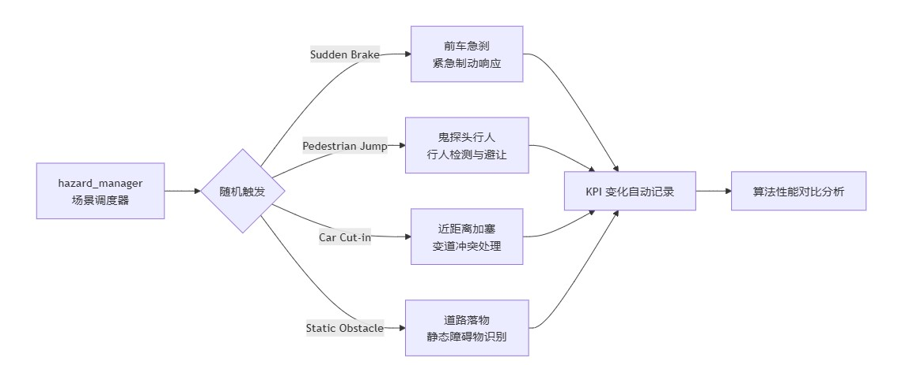
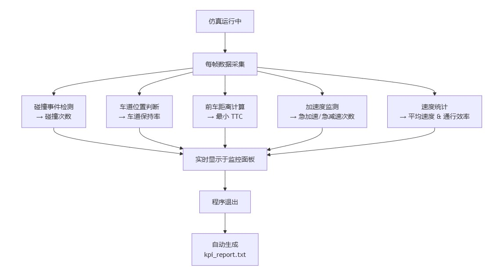
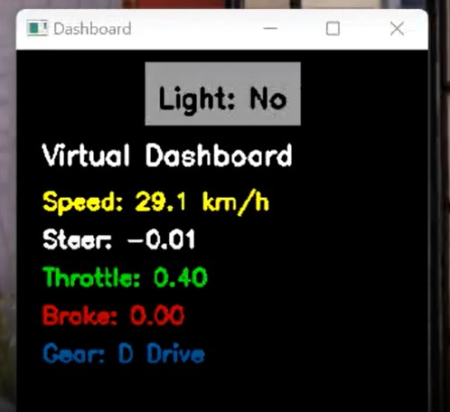

CARLA 自动驾驶系统辅助监控器
多传感器融合 · 环境感知 · 安全预警 · 自动化评估
目录
- 项目概述
- 系统架构
- 核心功能详解
- 1. 多传感器融合感知
- 2. 多环境与天气模拟
- 3. 安全预警系统
- 4. 极端危险场景自动生成
- 5. KPI 自动化评估与报告
- 6. 数据记录与回放
- 7. 可视化界面
- 项目结构
- 运行环境与依赖
- 快速启动
- 按键操作说明
- 适用场景与价值
- 扩展方向
- License
项目概述
本项目基于 CARLA 开源自动驾驶仿真平台，构建了一套完整的多传感器融合、环境感知、安全预警与自动化评估系统。项目覆盖从传感器数据采集、多环境场景模拟、危险行为检测到性能指标量化评估的全链路，可用于自动驾驶算法验证、边界场景测试、毕业设计与教学演示。
核心亮点：
- 多传感器融合：四路 RGB 相机 + 激光雷达点云 + BEV 鸟瞰图
- 多环境模拟：晴天 / 雨天 / 雾天 / 夜间一键切换
- 安全预警：前车碰撞预警（FCW）、车道偏离检测、红绿灯监测
- 危险场景：自动生成急刹、鬼探头、加塞、落物等极端工况
- KPI 评估：碰撞率、车道保持率、TTC 等指标自动计算与报告生成
- 数据回放：黑匣子记录 + 场景录制/回放
系统架构
系统采用模块化设计，各功能解耦为独立模块，由 main.py 统一调度：

核心功能详解
1. 多传感器融合感知

系统部署了多类传感器，构建车辆周围 360° 的感知能力：

- 四路 RGB 相机：前、后、左、右四视角实时画面拼接，提供车辆全向环境视图，消除盲区
- 激光雷达点云可视化：将三维点云投影到 BEV（鸟瞰图），以颜色编码区分障碍物距离，直观展示周边障碍物分布
- 车道线与可行驶区域绘制：结合 CARLA 地图 Waypoint 信息，在 BEV 中高亮车道边界与可行驶区域，辅助判断车道偏离
设计思路：多传感器融合是自动驾驶感知的基础。通过相机获取丰富纹理信息，激光雷达获取精确距离信息，BEV 视角提供全局态势感知，三者互补构成完整的感知链路。
2. 多环境与天气模拟
支持一键切换四种典型天气环境，模拟不同光照与路面条件：
| 天气模式 | 光照条件 | 路面状态 | 感知影响 |
|---|---|---|---|
| 晴天 | 充足自然光 | 干燥 | 基准环境，感知最佳 |
| 雨天 | 光照减弱 | 湿滑积水 | 相机清晰度下降，雷达噪点增加 |
| 雾天 | 严重散射 | 微湿 | 能见度骤降，远距目标丢失 |
| 夜间 | 仅有车灯 | 干燥 | 相机暗噪增加，远距感知受限 |
应用场景：天气模拟可用于验证感知算法在不同环境下的鲁棒性。例如测试雨雾天气下的目标检测准确率衰减，或夜间场景下的车道线识别能力。
3. 安全预警系统

实时监控车辆行驶安全状态，提供多维度预警：

- 前车碰撞预警（FCW）：实时计算与前车的距离和碰撞时间（TTC），当距离过近时，屏幕闪烁红/黄告警文字，提示危险等级
- 黄色预警：TTC < 3s，提醒注意
- 红色告警：TTC < 1.5s，紧急危险
- 车道偏离检测：基于地图 Waypoint 判断车辆是否压线，为车道保持率指标提供数据支持
- 红绿灯状态监测：实时获取前方红绿灯状态，并在仪表盘上方可视化显示，支持红灯停、绿灯行的场景验证
4. 极端危险场景自动生成
系统可随机触发四类高危场景，用于算法边界性能测试：

| 场景类型 | 英文标识 | 触发方式 | 测试目的 |
|---|---|---|---|
| 前车急刹 | Sudden Brake | 前方车辆突然减速 | 紧急制动响应 |
| 鬼探头行人 | Pedestrian Jump | 行人从遮挡物后方突然出现 | 行人检测与避让 |
| 近距离加塞 | Car Cut-in | 旁车突然切入本车道 | 变道冲突处理 |
| 道路落物 | Static Obstacle | 前方出现静止障碍物 | 静态障碍物识别 |
场景触发后，系统自动记录 KPI 变化，便于对比不同算法在极端工况下的表现差异。
5. KPI 自动化评估与报告
系统实时计算并记录多项关键性能指标，程序退出时自动生成 kpi_report.txt 报告：

| 指标 | 说明 | 评估维度 |
|---|---|---|
| 碰撞次数 | 仿真过程中发生的碰撞事件总数 | 安全性 |
| 车道保持率 | 车辆保持在车道内的时间占比 | 稳定性 |
| 最小 TTC | 全程与前车的最小碰撞时间（Time-To-Collision） | 安全裕度 |
| 急加速/急减速次数 | 超过阈值的加减速行为次数 | 舒适性 |
| 平均速度 | 仿真期间的平均车速 | 效率 |
| 通行效率 | 基于平均车速的通行效率评分 | 综合效率 |
所有指标实时显示在监控画面右上角，支持过程观察与事后复盘。
6. 数据记录与回放
- 黑匣子数据记录：将车辆位置、速度、航向角、加速度等数据持续写入
blackbox.csv，支持事后分析与轨迹复现 - 场景录制与回放：支持按键快捷操作，便于复现特定工况
R键 → 开始录制S键 → 停止录制并保存P键 → 回放已保存的场景
7. 可视化界面

- 主监控窗口：四路相机拼接 + BEV 鸟瞰图 + KPI 指标面板 + 告警信息，一站式掌控全局
- 仪表盘窗口：实时显示车速、红绿灯状态，界面清晰直观，模拟真实驾驶体验
项目结构
carla-rl-project-main/
├── main.py # 主程序入口，统一调度各模块
├── requirements.txt # 项目依赖库
├── README.md # 项目说明文档
└── core/ # 模块化功能目录
├── __init__.py # 模块初始化
├── sensors.py # 相机与激光雷达管理
├── npc_manager.py # NPC车辆与行人生成管理
├── recorder.py # 场景录制
├── player.py # 场景回放控制
├── blackbox.py # 车辆数据黑匣子记录
├── map_drawer.py # BEV鸟瞰图与车道绘制
├── ui_dashboard.py # 虚拟仪表盘
├── traffic_light_monitor.py # 红绿灯状态监测
├── kpi_evaluator.py # KPI指标自动评估
└── hazard_manager.py # 极端危险场景生成
运行环境与依赖
基础环境
| 依赖项 | 版本要求 | 说明 |
|---|---|---|
| Python | 3.7 ~ 3.10 | 推荐 3.8+ |
| CARLA | 0.9.12+ | 推荐 0.9.16 |
| 操作系统 | Windows / Linux | 需支持 CARLA 模拟器 |
Python 依赖库
numpy>=1.21.0
opencv-python>=4.5.5.62
carla>=0.9.14
快速启动
1. 安装 CARLA 模拟器
从 CARLA Release 下载对应版本，解压后运行：
# Linux
./CarlaUE4.sh
# Windows
CarlaUE4.exe
等待地图加载完成，出现仿真窗口即表示启动成功。
2. 安装 Python 依赖
pip install -r requirements.txt
注意：
carlaPython 包的版本需与 CARLA 模拟器版本匹配。CARLA 0.9.14+ 对应carla>=0.9.14。
3. 运行主程序
python main.py
启动后会出现两个窗口：主监控窗口（四路相机 + BEV + KPI）和仪表盘窗口（车速 + 红绿灯）。
按键操作说明
| 按键 | 功能 | 分类 |
|---|---|---|
n |
切换白天/夜间模式 | 天气控制 |
r |
开启雨天模式 | 天气控制 |
f |
开启雾天模式 | 天气控制 |
c |
恢复为晴天 | 天气控制 |
R |
开始录制场景 | 录制回放 |
S |
停止录制并保存 | 录制回放 |
P |
回放已保存的场景 | 录制回放 |
ESC |
退出程序 | 系统控制 |
适用场景与价值
| 场景 | 说明 |
|---|---|
| 毕业设计/课程设计 | 完整的系统架构与功能模块，可直接作为课程设计或毕设项目，覆盖感知、决策、评估全链路 |
| 算法验证平台 | 支持不同天气、高危场景下的自动驾驶算法性能测试与对比，快速迭代验证 |
| 教学演示 | 直观的可视化界面，适合向他人展示自动驾驶感知与安全预警的基本原理 |
| 未来扩展 | 模块化设计预留了控制算法接口，可快速接入 PID、MPC 或强化学习控制器 |
扩展方向
本项目采用模块化架构，预留了多个扩展接口，欢迎在此基础上进行二次开发：
- 控制算法接入：在
core/下新增控制器模块，接入 PID / MPC / 强化学习等控制算法 - 更多传感器：扩展
sensors.py，添加深度相机、GNSS、IMU 等传感器 - 场景库扩充：在
hazard_manager.py中添加更多危险场景模板 - 多车协同：基于
npc_manager.py扩展多车通信与协同决策 - ROS 桥接：通过 CARLA ROS Bridge 将数据发布到 ROS 生态，对接更丰富的算法栈
License
本项目基于 CARLA 开源平台构建，遵循 MIT License。